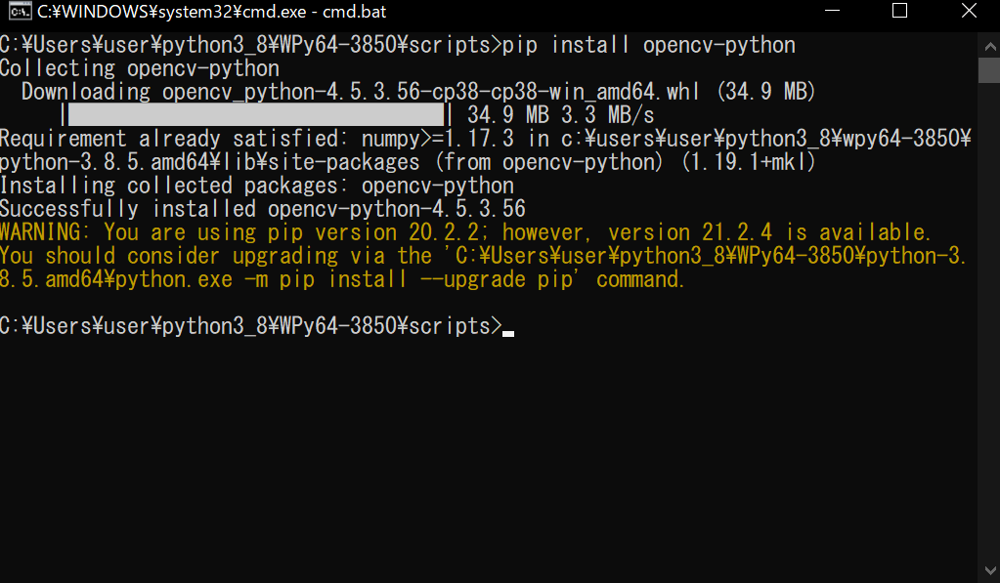
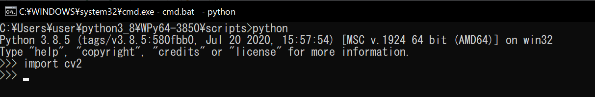

Pythonの覚書 | ワクガンス
WinPythonのコンソール | WinPythonにパッケージをインストール
WinPython Command Prompt.exeがWinPythonのコンソールになっている。
このコンソールから各種パッケージをpipコマンドでインストールできる。
（例）WinPython Command Prompt.exeの場所
C:\Users\user\python3_8\WPy64-3850\WinPython Command Prompt.exe

2021-9-1
WinPythonにOpenCVをインストール
WinPythonに含まれるツール「WinPython Command Prompt.exe」を起動してコンソールを起動する。
OpenCVをpipコマンドでインストール
pip install opencv-python
以上でインストール完了。
インストールされているか確認
「python」コマンドを実行してPython実行モードにし、「import cv2」を実行。
エラーが表示されなければOK(何も出なければOK)。

2021-9-1
xxx
2021-9-1
ホーム
プログラミングの覚書
Pythonの覚書